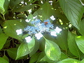

(この言葉は嫌いだが)いわゆるシズル感てやつでしょうか。
いや、ここではたと思って調べてみると、「シズル」="sizzle"、
to make a sound like food cooking in hot fat:
だそうで、肉を焼く音のことなんだね。転じてみずみずしさや湯気っぽい感じも含まれるという。
だいぶ転じてますね。
使うのやめようｗ
要するに、植物は雨に洗われると輝く。 うらやましいなあ。
雨が降る/雨が止む/植物が洗われる/それを見たくなる
けども、歩きじゃあまり遠くにいけないし、雨上がりの自転車は泥をはねてさらに情けない動物の姿になるので困る。 今日は上がってしばらく陽がさして泥が跳ねなくなった頃にうろついてみた。
で、ついでにこんなのも作ってみた。 全部が全部今日撮った写真ではないけれど。
 近所の植物
近所の植物
http://picasaweb.google.co.jp/testify2893/LIIJF
そういえば比較的昆虫も雨上がりに輝きますね。
かまきりとかそういうのはいる場所によっては泥まみれになるだろうけど…。